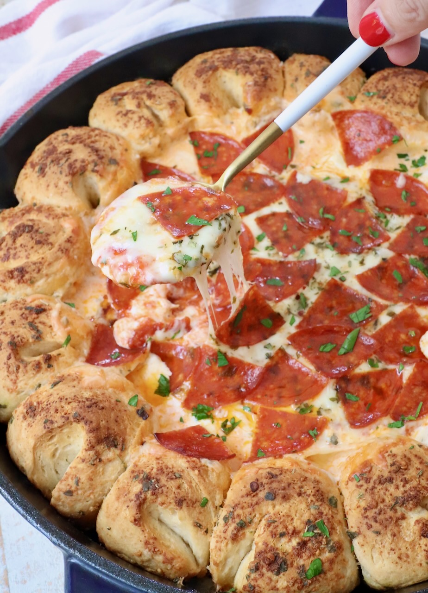
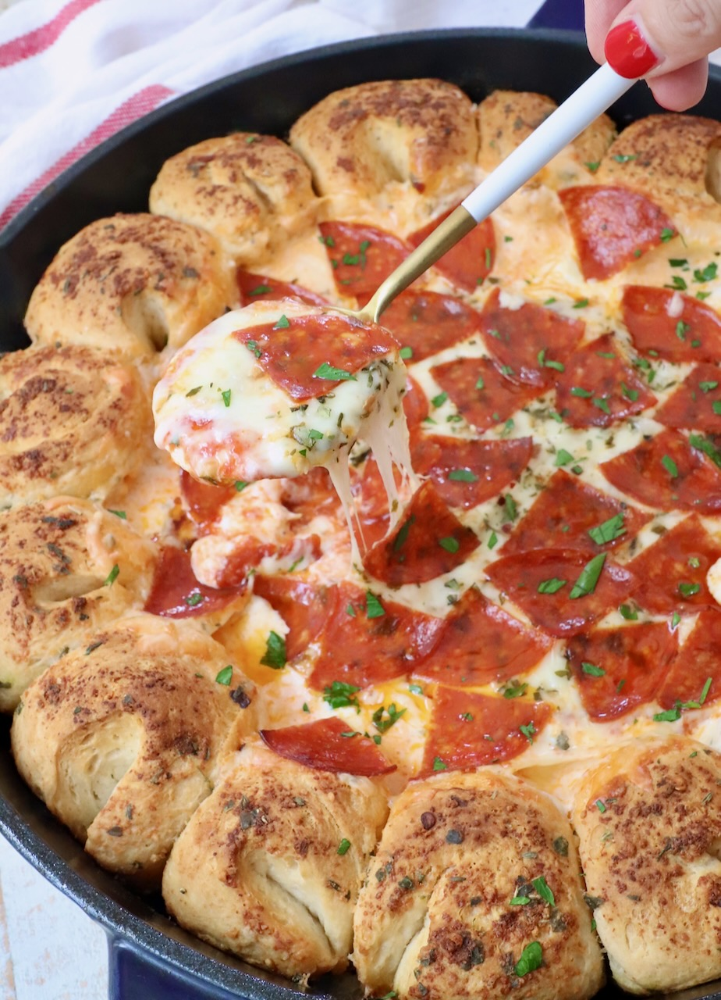

Ingredients - Bread
- 16.3 oz can Grands biscuit dough (8 count)
- ¼ cup melted butter
- 2 tsp parmesan cheese, grated
- 1 tsp Italian seasoning

Ingredients - Dip
- 8 oz cream cheese, softened
- 1 cup ricotta cheese
- 3 tsp Italian seasoning, divided
- 1 cup marinara or pizza sauce
- 1½ cups mozzarella cheese, grated
- 8 slices pepperoni, quartered (optional)

Instructions
- Preheat oven to 350°F.
- Cut each biscuit in half, roll into balls.
- Mix butter, parmesan & 1 tsp seasoning.
- Roll dough balls in butter, arrange around skillet.
- Mix cream cheese, ricotta, 2 tsp seasoning.
- Spread mixture in skillet, add sauce & cheese.
- Top with pepperoni, bake 25 – 30 min.


 
